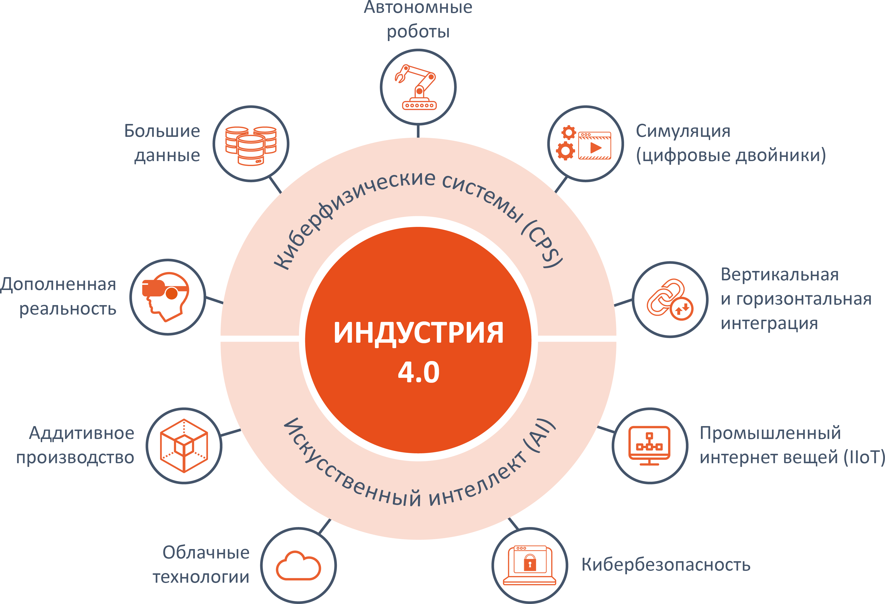
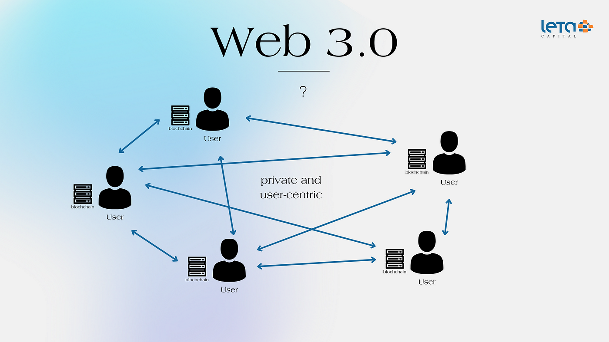

Раздел 1 - Введение
1. Современное состояние развития интернет-технологий (ИТ) в технологическом и социальном контекстах
Интернет-технологии (ИТ) занимают ключевое место в современном мире, объединяя множество аспектов жизни человека. С технологической точки зрения ИТ стремительно развиваются благодаря повышению производительности оборудования, развитию облачных вычислений, искусственного интеллекта (ИИ), интернета вещей (IoT) и больших данных. Например, скорость передачи данных в интернете выросла благодаря внедрению сетей 5G, а новые серверные технологии обеспечивают возможность обработки и хранения огромных объемов информации. С социального аспекта интернет-технологии способствуют глобализации, обеспечивая доступ к образованию, медицине, и другим ключевым услугам. Пандемия COVID-19 усилила роль ИТ как катализатора удалённой работы и онлайн-коммуникаций, подчеркнув их значимость в поддержании экономической и социальной активности. В то же время появились новые вызовы, такие как цифровое неравенство и вопросы кибербезопасности.
2. Понятие «Цифровой экономики» и тренды цифровизации критически важных процессов
Цифровая экономика – это экономика, основанная на цифровых технологиях, включая электронную коммерцию, цифровые платежи, автоматизацию процессов и использование данных как ключевого ресурса. Основные тренды цифровизации включают:
- Интеграцию ИТ в государственное управление (например, электронные правительства, системы цифровых госуслуг).
- Автоматизацию и роботизацию производства с целью повышения эффективности и минимизации затрат.
- Цифровую трансформацию в бизнесе, выражающуюся в переходе на онлайн-платформы, использовании аналитики данных для оптимизации процессов.
Роль ИТ в этих процессах колоссальна, поскольку они обеспечивают инфраструктуру (облачные сервисы, дата-центры), инструменты анализа (ИИ, аналитика больших данных) и каналы коммуникации (интернет, мобильные сети).
3. Понятие «Индустрия 4.0» и перспективные ИТ в данной области
Индустрия 4.0 представляет собой концепцию четвертой промышленной революции, которая характеризуется слиянием цифровых, физических и биологических технологий. Её основные элементы:
- Интернет вещей (IoT) – устройства, объединённые в сеть для обмена данными.
- Киберфизические системы (CPS) – интеграция физических объектов с ИТ.
- ИИ и машинное обучение для автоматизации и анализа процессов.
- Аддитивные технологии (3D-печать) для производства.
- Цифровые двойники – виртуальные копии реальных объектов для моделирования и мониторинга.
Эти технологии находят применение в производстве, логистике, медицине, энергетике и других ключевых отраслях.
4. Понятие «Web 3.0» и ключевые технологические тренды
Web 3.0 – это концепция следующего этапа развития интернета, где главную роль играют децентрализованные системы и технологии. Основные черты Web 3.0:
- Блокчейн и смарт-контракты – для обеспечения безопасности и прозрачности транзакций.
- Семантический веб – использование искусственного интеллекта для улучшения обработки данных.
- Децентрализованные приложения (dApps) – приложения, работающие на базе блокчейна.
- Технологии AR/VR – для создания нового опыта взаимодействия пользователей с интернетом.
Ключевой тренд Web 3.0 – это переход к децентрализации, который позволяет пользователям сохранять контроль над своими данными, создавая более безопасную и приватную цифровую среду.
Современное развитие инфокоммуникационных и интернет-технологий представляет собой основу для построения цифрового будущего. Их влияние охватывает все сферы жизни, что подчеркивает их значимость для общества и экономики.
Раздел 2 – Ключевые направления развития ИТ в концепции «Web 3.0»
Концепция «Web 3.0» и текущее состояние развития
Web 3.0 представляет собой эволюцию интернета, ориентированную на децентрализацию, безопасность, приватность и интеллектуализацию. В отличие от Web 1.0 (статических страниц) и Web 2.0 (динамических и интерактивных веб-приложений, управляемых крупными централизованными платформами), Web 3.0 предлагает пользователям контроль над своими данными и взаимодействие через децентрализованные технологии.
Web 3.0 основывается на использовании искусственного интеллекта (ИИ), блокчейна, интернета вещей (IoT) и семантического веба для более интеллектуальной и автономной работы приложений.
Основные технологические тренды Web 3.0
- Децентрализация: использование блокчейна и p2p-сетей для исключения посредников.
- Семантический веб: понимание данных машинами для улучшения их обработки.
- Децентрализованное хранение данных: распределённые системы хранения для повышения безопасности и доступности.
- Децентрализованные приложения (dApps): приложения, работающие в блокчейне.
- Технологии AR/VR и метавселенные: расширение цифровой реальности.
- Смарт-контракты: программируемые контракты для автоматизации транзакций.
Децентрализация хранения данных
Одним из ключевых направлений Web 3.0 является децентрализация хранения данных. В традиционных моделях данные хранятся на серверах централизованных организаций, что создаёт риски уязвимости, цензуры, потери данных и нарушения приватности. Децентрализованное хранение предлагает альтернативу, распределяя данные между участниками сети.
Как работает такая система:
- Распределённые файловые системы (DFS): данные разбиваются на части и распределяются по сети. Примеры: IPFS (InterPlanetary File System), Storj, Filecoin.
- Механизмы защиты данных: шифрование данных перед хранением и использование уникальных ключей доступа.
- Использование блокчейна: для записи метаданных, проверки целостности данных и обеспечения вознаграждений участникам сети.
Преимущества:
- Устойчивость к отказам: данные дублируются на множестве узлов, что делает их доступными даже в случае сбоя отдельных серверов.
- Приватность и контроль: пользователи сохраняют контроль над своими данными, управляя доступом к ним.
- Снижение стоимости: модели вознаграждений (например, Filecoin) используют избыточное место на дисках пользователей, снижая расходы.
- Отсутствие централизованного контроля: минимизирует риск цензуры и манипуляции данными.
Текущее состояние:
- IPFS: активно используется в проектах Web 3.0, таких как NFT и распределённые сайты.
- Filecoin: децентрализованная сеть хранения с рыночной экономикой.
- Storj: предлагает решения для бизнеса, конкурируя с традиционными облачными провайдерами.
- Архивирование данных: проекты, такие как Arweave, предлагают долгосрочное хранение данных, устойчивое к изменению.
Проблемы и вызовы:
- Скорость доступа: распределённые системы могут быть медленнее традиционных из-за сетевых задержек.
- Масштабируемость: рост числа участников требует оптимизации сети.
- Принятие технологии: предприятиям и пользователям необходимо адаптироваться к новым подходам.
Децентрализация хранения данных – это перспективный тренд Web 3.0, который способствует обеспечению безопасности, доступности и контроля над данными. Текущие разработки, такие как IPFS и Filecoin, демонстрируют высокий потенциал технологии, но требуют дальнейшего совершенствования для массового применения. Внедрение таких решений позволит создать более безопасную, прозрачную и устойчивую экосистему интернета.
Раздел 3 – Основные области применения ИТ в концепции «Web 3.0»: Цифровая медицина
Современное состояние цифровой медицины
Цифровая медицина – это интеграция современных информационных технологий (ИТ) в сферу здравоохранения с целью повышения качества, доступности и персонализации медицинских услуг. В последние годы этот сектор демонстрирует значительный рост благодаря внедрению таких технологий, как телемедицина, носимые устройства, искусственный интеллект, и использование больших данных.
Однако традиционные модели хранения и обработки медицинской информации сталкиваются с рядом проблем:
- Централизация данных: медицинские записи хранятся на серверах отдельных клиник или в национальных базах данных, что создает риски уязвимости.
- Ограниченная доступность данных: пациенты и врачи часто не имеют полного контроля над медицинской историей.
- Приватность и безопасность: нарушение конфиденциальности данных пациентов остаётся важной проблемой.
Роль технологий Web 3.0 в цифровой медицине
Концепция Web 3.0 может стать катализатором трансформации цифровой медицины, предлагая решения для децентрализации, защиты данных, персонализации и повышения доступности услуг.
Основные направления применения Web 3.0 в цифровой медицине:
- Децентрализованное хранение медицинских данных: использование технологий, таких как блокчейн и распределённые файловые системы, позволяет пациентам хранить свои медицинские записи в зашифрованном виде и предоставлять доступ только по необходимости.
- Смарт-контракты: автоматизация административных процессов, например, страховых выплат или передачи медицинских записей между учреждениями.
- Токенизация медицинских данных: пациенты могут делиться своими анонимизированными данными с исследовательскими институтами, получая вознаграждение.
- ИИ и большие данные: анализ медицинских данных для ранней диагностики и разработки персонализированных методов лечения.
- Децентрализованные приложения (dApps): создание платформ для телемедицины, где данные пациента защищены и анонимны.
Децентрализация медицинских данных: решение ключевых проблем
Децентрализация медицинских данных решает сразу несколько актуальных вопросов:
- Приватность: данные хранятся в зашифрованном виде, доступ к ним возможен только по разрешению владельца.
- Непрерывность обслуживания: врачи могут получить доступ к полной медицинской истории пациента, что особенно важно при экстренной помощи.
- Прозрачность: пациенты могут контролировать, кто и когда имел доступ к их информации.
Примером является проект MedBlockChain, который использует блокчейн для управления медицинскими данными, или Healthereum, где пациенты могут отслеживать свои данные и взаимодействия с провайдерами услуг.
Технологии, оказывающие наибольшее влияние на развитие цифровой медицины
- Блокчейн: ключевой инструмент для децентрализации хранения данных и обеспечения их неизменности.
- ИИ и машинное обучение: анализ медицинских изображений, прогнозирование заболеваний и разработка персонализированных планов лечения.
- Интернет вещей (IoT): носимые устройства (фитнес-трекеры, датчики) для мониторинга здоровья пациентов в реальном времени.
- Децентрализованные облачные системы: такие платформы, как IPFS или Filecoin, могут использоваться для хранения медицинских изображений и больших массивов данных.
Обоснование выбора ключевых технологий
- Блокчейн обеспечивает безопасность и контроль, что особенно важно для медицинских данных.
- ИИ увеличивает точность диагностики и повышает эффективность лечения.
- IoT позволяет наблюдать за пациентами дистанционно, снижая нагрузку на больницы и повышая доступность услуг.
- Децентрализованное хранение предотвращает потери данных из-за сбоев или хакерских атак.
Web 3.0 способен существенно улучшить цифровую медицину, предоставляя пациентам больше контроля над их данными, увеличивая безопасность информации и персонализируя медицинские услуги. Интеграция децентрализованных технологий и ИИ в здравоохранение – это не просто тренд, а необходимость, обеспечивающая устойчивое развитие отрасли и улучшение качества жизни людей.
Раздел 4 – Заключение и основные выводы по работе
1. Web 3.0: новая эра интернет-технологий
Концепция Web 3.0 представляет собой революцию в подходах к управлению данными, взаимодействию пользователей с интернетом и обеспечению безопасности. Она акцентирует внимание на децентрализации, прозрачности, приватности и автономии, что делает её особенно значимой в текущую эпоху цифровизации.
2. Роль ИТ в цифровой медицине
Цифровая медицина является одной из наиболее перспективных отраслей применения технологий Web 3.0. Она уже трансформируется благодаря искусственному интеллекту, интернету вещей и большим данным. Однако использование блокчейна и децентрализованных систем хранения данных открывает новые горизонты для управления медицинской информацией, делая её доступной, защищённой и приватной.
3. Децентрализация как основа развития цифровой медицины
Децентрализованное хранение данных, смарт-контракты и токенизация медицинской информации способствуют решению ключевых проблем отрасли: приватности, безопасности и доступности. Технологии Web 3.0 обеспечивают новые возможности для интеграции данных между учреждениями и персонализации медицинских услуг.
Важнейшие ИТ для развития цифровой медицины
- Блокчейн: обеспечивает безопасность и неизменность медицинских записей, исключая посредников.
- ИИ и машинное обучение: позволяют анализировать данные пациентов, повышая точность диагностики и персонализацию лечения.
- IoT: расширяет возможности дистанционного мониторинга здоровья и упрощает управление хроническими заболеваниями.
- Децентрализованные облачные системы: обеспечивают надёжное и масштабируемое хранение больших объёмов медицинских данных.
Заключение
Web 3.0 не только трансформирует интернет, но и создаёт новую цифровую экосистему для различных отраслей. Цифровая медицина, интегрируя передовые технологии, становится более безопасной, прозрачной и ориентированной на пациента. Внедрение таких решений позволит обеспечить устойчивое развитие здравоохранения, повысить качество медицинских услуг и укрепить доверие между пациентами и поставщиками услуг.
Технологии Web 3.0 закладывают фундамент для будущего, где безопасность и приватность данных будут центральными ценностями цифрового общества.
Для дополнительной информации ознакомьтесь с исследованием, а также экспертной статьей.